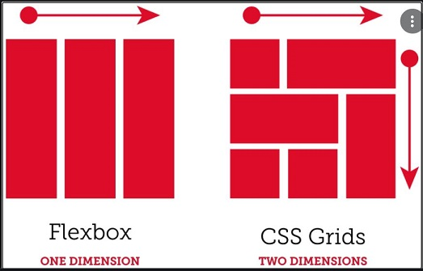

Es un sistema de maquetación basado en grillas y se caracteriza por ser bidimensional. Las cuadrículas se pueden utilizar para posicionar áreas principales de la página o pequeños elementos de la interfaz de usuario.
Hace un tiempo se trabajaba con los llamados floats, pero es una técnica compleja que daba lugar a muchos errores. Hoy los diseñadores cuentan con dos métodos para implementar un diseño dinámico: además de CSS grid, también se puede usar Flexbox. Sin embargo, las dos técnicas difieren en algunos aspectos.
Flexbox es unidimensional. Esto quiere decir que los elementos solo se pueden mover a lo largo de un eje. En cambio, un diseño CSS Grid ofrece al diseñador web dos dimensiones para la colocación de los objetos porque, en lugar de solo un eje, permite crear una rejilla con filas y columnas.

Para utilizar Grid CSS necesitaremos tener en cuenta una serie de conceptos que utilizaremos a partir de ahora y que definiremos a continuación:
- Contenedor: El elemento padre contenedor que definirá la cuadrícula o rejilla.
- Ítem: Cada uno de los hijos que contiene la cuadrícula (elemento contenedor).
- Celda (grid cell): Cada uno de los cuadritos (unidad mínima) de la cuadrícula.
- Area (grid area): Región o conjunto de celdas de la cuadrícula.
- Banda (grid track): Banda horizontal o vertical de celdas de la cuadrícula.
- Línea (grid line): Separador horizontal o vertical de las celdas de la cuadrícula.